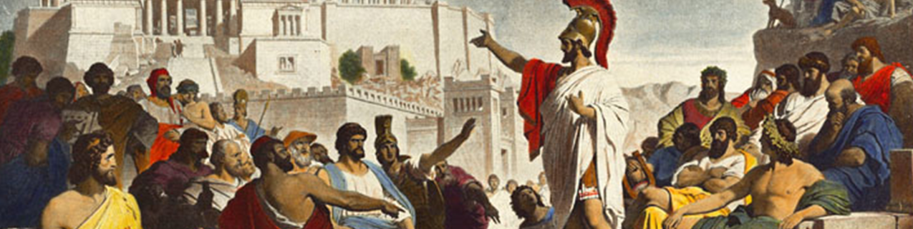

A mükénéi kultúra a görög szárazföld késő bronzkori kultúrája (Kr. e. 16–12. sz.); a helladikus kultúra utolsó szakasza. Nevét egyik legjelentősebb lelőhelyéről, Mükénéről kapta. Rajta kívül fontos központok és lelőhelyek voltak Pülosz, Spárta és Tirünsz is.
Kr. e. 2200-1900 között a görög szárazföldre indoeurópai néptörzsek vándoroltak be, akiket később akhájoknak, iónoknak neveztek. A Kr. e. 16. században ezek a görög törzsek benyomultak a Peloponnészoszra. Katonailag jól megszervezett társadalmukba beolvadtak a félszigeten élő kisebb népek, ettől művészetük paraszti jellegűvé vált. Kultúrájukból és a minószi kultúra összeolvadásából Kr. e. 1600 körül keletkezett és hirtelen kivirágzott a mükénéi kultúra, melyben anatóliai és egyiptomi hatások is érvényre jutottak. Kr. e. 1450-től a mükénéi törzsi vezérek elfoglalták a Szantorini vulkán kitörése (kb. Kr. e. 1500 vagy 1470 körül) által elpusztított Krétát, amely a krétaiak földközi-tengeri uralmának végét jelentette, és a Kr. e. 14. századtól a mükénéi befolyás kiterjesztéséhez vezetett a Földközi-tenger keleti térsége felett. A mükénéi kultúra az égei népvándorlások, a tengeri népek vándorlásának viharaiban a Kr. e. 13–12. században pusztult el, mivel elvágták külső nyersanyagforrásaitól. E korszak emléke Homérosz eposzaiban él tovább. Az akhájok kapcsolatban álltak a Peloponnészoszon virágzó prehellén kultúrákkal (pl. Lerna) is.
A mükénéi művészet első korszakát aknasírok alapján ismerjük. Az aknasírokból előkerült leletek krétai import dísztárgyak, kardvégek, tőrvégek. A helyi és krétai hagyományok ötvöződését mutatták ki harci jeleneteket ábrázolós sztéléken, halotti maszkokon. Itt már megfigyelhetők a mükénéi művészet alapelemei, a geometrikus minták, lineáris felosztás. A mükénéi kultúra felfedezését Heinrich Schliemannak köszönhetjük, aki a mükéneiek által kifosztott Tróját is feltárta.
A mükénéi civilizációról részleteiben - ami eredetét, kialakulását, a társadalomszerkezetet, a gazdaságot, a vallást, a többi civilizációval való kapcsolatot stb. illeti - meglehetősen kevés biztosat tudunk; az újabb ásatások nyomán előkerült régészeti leletek és újabb (a kilencvenes évekig kialakult), interdiszciplináris alapú történészi elméletek a történelemkönyvekben szereplő „palotagazdaságok” képét részleteiben inkább bizonytalanabbá, semmint árnyaltabbá tették.
Az akhájok a minószi kultúrától átvették többek között a palotakultúrát és a krétai kézműipar jellegzetes termékeit is. Bár az anyagi hagyaték egységes vonásokat mutat, a mükénéi kultúra több, egymástól független palotaközpont körül jött létre. Főbb központjai a görög szárazföldön Mükéné, Tirünsz és Pülosz, Athén, Thébai, Gla, Orkhomenosz, Iólkosz, majd a Kr. e. 14. századtól Kréta szigete és az anatóliai partvidék egy része is mükénéi uralom alá került. A kézműiparnak nagy mennyiségű import nyersanyagra – a bronz előállításához rézre és ónra, a luxustermékek készítéséhez elefántcsontra és borostyánra – volt szüksége. A mükénéi gazdaság ezért intenzív kereskedelmi kapcsolatot tartott fenn Kis-Ázsiával – például Milétosszal -, továbbá Egyiptommal, Itáliával és Szicíliával. A fémimport megszervezésére hozták létre a mükénéi palotagazdaságokat, amelyek minószi, illetve prehellén minták nyomán alkalmazták a raktári újraelosztásos termelési rendszert. A palotagazdaságok raktáraiból kaptak nyersanyagot és élelmiszert az egyes termelők, akik cserébe termékeiket a raktárakba szolgáltatták be. Úgy látszik, mintha a mükénéiek Krétától többet tanultak volna, mint amennyit adtak neki; uralmukra, amely egybeesik a knósszoszi lineáris B írást tartalmazó agyagtáblák korával (Kr. e. 1400 táján), szűkös viszonyok, a harcias életmód, a kézművesség fejlődése és a paloták művészetének hanyatlása a jellemző. A krétai lineáris A írásból alakult ki a mükénéi kultúra által használt, a görög nyelv rögzítésére átalakított lineáris B írás, amellyel a palotagazdaságok raktárainak leltárait vezették. A fellelt agyagtáblákból kiderül, hogy minden gazdaság alapja a mezőgazdaság volt. A juhokat ötvenesével számolták, a gyapjú alapegysége az egy nyájban lévő juhok egytized részének vagy a kosok egynegyedének többszöröse volt. Volt több, elkülönült, speciális foglalkozás és mesterség: juhász, kecskepásztor, vadász, favágó, kőműves, hajóépítő, ács, stb. A gabonát a nők őrölték és mérték ki, de a kenyeret a férfiak sütötték meg. A fényűző életmód aranyműveseknek, fürdősnőknek és kenőcsfőzőknek (illatszerkészítőknek) adott munkát. Magánszemélyeknek is lehettek rabszolgáik, akik követték uruk foglalkozását; a fogságba hurcolt nők munkaerőként fontos szerepet játszottak. Gyakran említik a kenyeret, az olajat, a bort. A szokásos állatokat tartották nyilván, közéjük tartozott a nem túl gyakori krétai kecske is. Egy pecsétkő ábrázolása nyomán felmerült, hogy ezeket a hosszú szarvú, méltóságteljes állatokat párosával esetleg kocsik húzására is felhasználták. Azt, hogy a mükénéiek milyen zöldségféléket fogyasztottak, homály fedi, de sokféle fűszert ismertek, például a mentát, és tudjuk, hogy Knósszoszban a mükénéi korszakban sajtot is ettek. A knósszoszi juhászok és kecskepásztorok nyájaikat a palotától távolabb legeltették, és külön adószedők gyűjtötték be az egyes nyájak után az állatok és a gyapjú megfelelő hányadát. Igen kevés volt a ló, és nem sok a szarvasmarha. A disznókat kondákban legeltették, és a zsírt külön nyilvántartották.
Az egyes palotagazdaságok apró területű államokat alkottak; élükön a vanax (király) állt, aki első emberére, a lavagetaszra (vezír), valamint a hivatalnokrétegre és a hadseregre támaszkodott a külső és belső támadások kivédésében. A hadsereg fontossága ebben az időben a Közel-Keleten másutt is hasonlóképp megnövekedett. A király volt ugyan az uralkodó, de a gabona vagy a föld elosztásakor a három főből álló tanácsnak együttesen ugyanakkora rész jutott, mint neki, és a tanácstagokéval azonos nagyságú rész a rangban a király után következő, másik tisztségviselőnek. Lehetséges, bár nem bizonyított, hogy ez utóbbi gyakorolta a királyságban a világi hatalmat, a király pedig inkább a vallásit.
A sírokban talált áldozati ajándékok, az aranyálarcok, a mézben való konzerválás olykor kimutatható szokása arra enged következtetni, hogy kialakult nézeteik voltak a halál utáni életről. A krétai barlang-szentélyekben végzett termékenységi kultuszok vallási rendszerük egyik fontos elemét jelenthették. Az épületek romjain és a különböző tárgyakon látható ábrázolások szerint többistenhívők voltak. Valószínű, hogy a görög tragédiákban előforduló Iphigeneia Mükénében még nagyhatalmú istennő volt. Az istenek áldozati ajándékokat kaptak, és tulajdonnal is rendelkeztek. Mindennek ellenére biztos tudásunk nagyon csekély vallási nézeteikkel kapcsolatban.
A legjelentősebb lelőhely természetesen a kultúra névadó városa. Már magának a városnak is érdekes a felépítése: külön negyedek vannak a kézműveseknek, az előkelőknek, a temetőnek. A várost fal veszi körül, amit habarcs nélkül egymásra rakott óriási kőtömbök alkotnak. Ezt a fajta falazási módot küklopikus falazásnak hívjuk. Mükéné az első görög város, melynek volt akropolisza, ez a nyugat-mezopotámiai, szíriai és hettita palotakomplexumból eredő fellegvártípus. A legismertebb bejárat az Oroszlánkapu, amely szerkezetével az ősi megalitokra emlékeztet, a gerendáját a ránehezedő faltömeg nyomásával szemben háromszögű teherhordó elem védi, ez volt a boltív elődje, a tehermentesítő háromszög. Ezt tölti ki az oroszlános dombormű. A két élőlény tökéletesen alkalmazkodik a felülethez, egymás felé fordulásukkal ellensúlyozzák a háromszög formáját. Az ország lakói többnyire meredek sziklákat szemeltek ki maguknak és ott építették fel erős fallal körülzárt váraikat. A tirünszi palota helyén régebben egy hatalmas körépítmény állt, emberek laktak benne. Már a meredek szikla is biztos védelmet jelentett, de falakat is emeltek köré. Az erőd magasan kiemelkedett a kis falvak környezetéből. Különös figyelmet szenteltek a várkapunak. Úgy helyezték el, hogy a támadó harcosoknak jobb oldalukkal (melyet nem fedett pajzs) kellett a bejárat felé haladniuk. Az erődnek titkos kijárata is volt, melyen át elmenekülhettek lakói. Több kapun áthaladva nyitott, oszlopokkal körülvett udvarba jutott az ember. Innen léphetett be a megaronba, a téglalap alakú központi lakóhelyiségbe, aminek közepén tűzhely állt. Itt gyűltek össze a hidegben. „Itt mulatoztak a pháiákok folyton, ettek és ittak, mert bőven volt eleségük” – írja Homérosz az Odüsszeiában. Ennek a szomszédságában kisebb helyiségek sorakoztak, ezek is a nyitott udvarra vezettek. A megaron volt a palota központja, ez előtt oszlopok helyezkedtek el. A külső falak csupaszak, a belső falak felső részét alabástrom díszíti, a falak többi részét élénkszínű freskók borítják. Az oszlopokat vastagon fedte az arany. A népköltészetben sokáig fennmaradt e szikrázó csarnokok emléke. A palotákban a világos, szimmetrikus felépítés, és a formák áttekinthetősége uralkodott. Az építészeti maradványok közül a legrégebbiek az ún. aknasírok, melyekben a leletek legnagyobb része még a krétai kultúra alkotása vagy annak helyi utánzata. Mükéné várain belül számos sír található. A legnagyobb Átreusz kincsesháza, ami egy domboldalon épült. A sír alapja 15 méter átmérőjű kör, álkupola magasodik fölé. Már kiraboltan fedezték fel, de a többi sírban találtak értékeket, például arany halotti maszkokat (Agamemnón halotti maszkja), tiarákat, drágakővel díszített tőröket, ékszereket és serlegeket. Ezek közül az egyik leghíresebb az Athéni Nemzeti Múzeumban őrzött „Nesztór-serleg”. Nevezetesek még az ugyanitt látható „vaphiói aranyserlegek”, melyek a Kr. e. 15. század körül készültek. A belső kőfalakat arany virágok díszítették. Az egész építmény áttekinthető, fejlettek az arányviszonyok. A görög utazó, Pauszaniasz egy piramishoz hasonlítja a síremléket. A mükénéi díszítési mód, az ún. ephürai stílus elsősorban a fazekas-művesség emlékein figyelhető meg. A Kr. e. 14. századból származó álboltozatos, centrális elrendezésű, monumentális kupolasírok, a küklopikus falmaradványok, az erődök és paloták már jellegzetesen mükénéiek. A nyitott krétai palotákkal szemben a mükénéi központok 6-7 méter vastag fallal védett erődpaloták. Mükénében a várkaput bástyák is védték. Az uralkodók kupolasírjai olyan jelentős megkülönböztető elemek, hogy a korszakot a kupolasírok dinasztiája néven is említik, holott Mükéné tényleges uralkodóiról gyakorlatilag semmit sem tudunk.